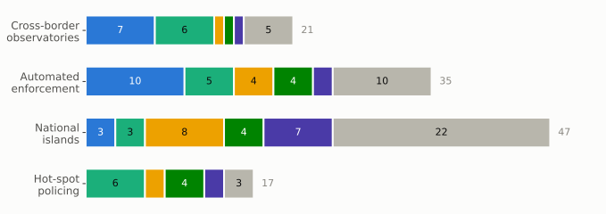
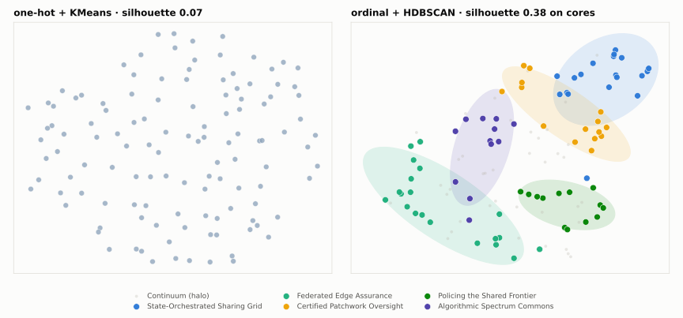
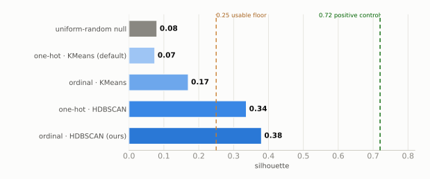
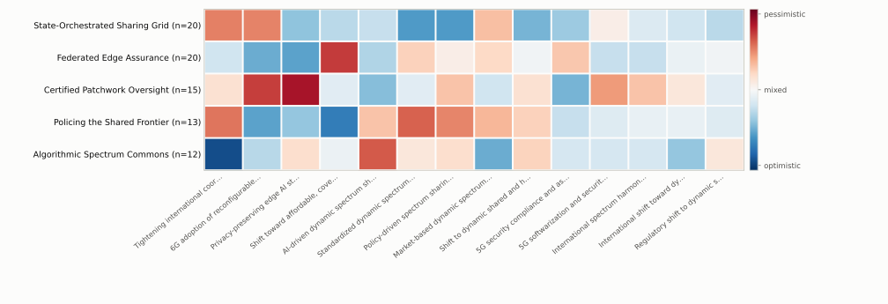

PDFs → searchable chunks. The engine derives the domain itself.
Bottom-up from the product (BOM) + top-down trend scan of the corpus.
Each driver becomes a slider with 4 future positions (Zwicky box).
An expert panel scores which slider positions fit together (CIB).
Density clustering condenses the field into named archetypes — honestly.
Evidence-grounded scoring, MCDA ranking, interactive dashboard.

OECD The Road to 5G, ITU Spectrum Monitoring Handbook, arXiv …
69 sources · 3,905 chunks
Dynamic, shared spectrum access — a slider with 4 positions:
observatories · automated enforcement · national islands · hot-spot policing
grounded in 416 passages
+2 international dynamic governance
−1 affordable coverage-first licensing
5-persona panel · 182 pairs · 29 % negative
observatories → Sharing Grid
hot-spot → Shared Frontier
islands → mostly continuum
| Method | Its job | Without it |
|---|---|---|
| Morphological box (Zwicky 1969) | opens the space — what is conceivable | only the obvious scenarios |
| Cross-impact panel (Weimer-Jehle 2006) | closes it — what is consistent | 268 M arbitrary combinations |
| Monte-Carlo + fixed points | searches it — every region, not corners | hand-picked futures |
| HDBSCAN on ordinal encoding | condenses honestly — may say “no cluster” | forced clusters |
| AHP + TOPSIS (Saaty; Hwang/Yoon) | ranks transparently | gut feeling |
| Null-model referee | audits every step against random fields | unverifiable structure claims |
| Field fed to the engine | Silhouette | z-score | Engine’s verdict |
|---|---|---|---|
| Synthetic, coupled — a buried coin | 0.72 | +8.6 | beeps — usable structure |
| Synthetic, uncoupled — empty sand | 0.22 | −0.7 | silent — ≈ random |
| Real spectrum field (120 scenarios) | 0.07 | +1.4 | silent — ≈ random |
| Lever | Before | After |
|---|---|---|
| Dissent-preserving panel aggregation LLMs are relentlessly positive — the median washed out every trade-off |
~2 % negative couplings | 29 % — inside the 20–30 % literature band |
| Dimension-bucketed trend extraction + merge guard the field had collapsed to a single driving axis |
1 driving axis, 1 dimension | 17 axes across 4 dimensions |
| Targeted corpus enrichment market / geopolitics / tech sources added |
2,875 chunks · z = 1.4 | 3,905 chunks · z = 3.55 — significantly above random |

docking + arXiv auto-enrichment
BOM + bucketed trend scan
morphological box
de-biased CIB panel
archetypes + referee tests
grounded auditor → MCDA · dashboard
| What the five worlds share | a shift from hardware-defined to software- and AI-defined monitoring — invest where it pays off in every world |
| What we say out loud | a third of the field remains a continuum; figures are ranges, not decimals |
| What comes next | R&S local-inference endpoints · human-in-the-loop CIB validation · evaluation score anchoring |


| Approach | Negative share | Verdict |
|---|---|---|
| Absolute prompt, median aggregation | ~2 % | positivity bias — trade-offs washed out |
| Contrastive (“tension-primed”) prompt | 71 % | failed — overshoots into fake pessimism |
| Dissent-preserving aggregation — a strong minority trade-off (≤ −2) survives the median | 29 % | inside Weimer-Jehle’s 20–30 % band |
| Knowledge base | 69 sources · 2,875 → 3,905 chunks (enriched) · agriculture KB: 300 chunks |
| Drivers | 41 unified → 14 selected (all driving) · driving axes 1 → 17 in 4 dimensions |
| Cross-impact | 182 pairs · 5 corpus-derived personas · 2 Delphi rounds · 29.1 % negative |
| Consistency | 2,000 MC runs → 510 fixed points → 120 field scenarios |
| Structure | lenses 0.07 / 0.17 / 0.34 / 0.38 · 5 archetypes · 33 % continuum · floor 0.25 |
| Engine validation | coupled 0.72 (z 8.6) · uncoupled 0.22 (z −0.7) · real 0.07 (z 1.4) · enrichment z 1.4 → 3.55 |
| Delivery | one command (run_full.py, 14 stages, ~30 min) · 176 tests green · CI · dashboard |